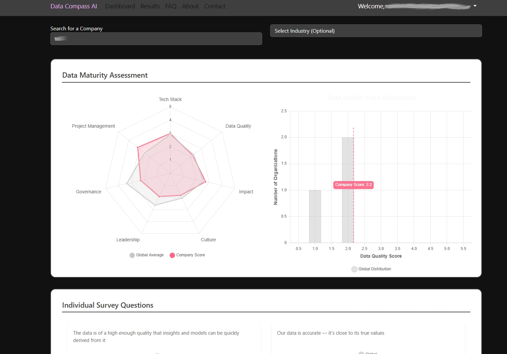

Roni Kobrosly Ph.D.'s Website
written by Roni Kobrosly on 2025-02-26 | tags: generative ai engineering career data

After weeks of work in the little cracks of free time I have these todays, I'm launching a new web service to help our wonderful data science / analytics / AI data community.
The service is https://datacompass.ai ðŸ§
As I've mentioned in a prior post, despite the sexiness of the field, many data scientists/analysts/AI engineers seem to be leaving the field in droves. Job satisfaction is low, and burnout is high. There are dozens of reasons for this, but here are a few:
- When interviewing for potential data science roles, candidates are told the company has "mountains of data" and "endless exciting problems to tackle". This is often not true.
- Companies have immature tech stacks, making data ETL and productionizing models a nightmare.
- Company culture is not data-driven, data teams are third-class citizens, and data teams struggle to get buy-in from stakeholders.
- I've literally worked at an organization where we were pressured to "cook the books" and make analyses look better than the truth. It's hard to balance one's integrity with the need to put food on the table 😔
Data Compass AI's mission is to make organizations' data maturity levels (be they large corporations, startups, non-profits, or government agencies) fully transparent to data job seekers and the data community. The idea is data employees anonymously fill out a data maturity survey about their org. It spans dimensions of Tech Stack, Impact, Data Quality, Leadership, Governance, Culture, and Project Management. Beyond helping job seekers transparently see how functional (or dysfunctional) a data org is, this service can also allow organizations to see how their data maturity stacks up against competitors and others in their industry.
The dimensions/facets of data maturity that are scored include: Tech Stack Quality, Data Quality, Data Team Impact, Culture, Leadership, Governance, and Project Management
Data Compass AI has a number of important features to highlight.
1) The primary function is to visually compare global data maturity dimensions for all registered companies, against industry-specific companies, and individual companies (see blog logo image). The idea here is to see how a specific organization compares against all other companies and those in the same industry.
2) Data Compass AI also allows users to see individual resposnes to survey questions for a given company. So if a user is particularly interested in the ease (or difficulty) in productionizing a model at an organization, they can clearly see it.
3) It's easy to imagine a scenario where a job seeker or someone curious might want to directly compare survey results between two organizations. This can be done at a high level of granularity.
4) Registered users can access a dashboard to get quick view of their company scores, as well as links the above-mentioned functions and a profile page where they can change their password or delete their account or data if they choose.

A few more key points I want to highlight:
- You must provide your work email to verify you work where you say you do (Glassdoor does this, so there is a precedent for this) but you will remain completely anonymous. Your name will never be mentioned.
- You can delete your account and data whenever you like.
- This service is 100% free and there is no catch to this. This is meant to be a genuine service for good to the data community.
- We have a comprehensive set of community guidelines (https://lnkd.in/eFf-WnYx) covering topics of abusive posts, identifying executives by name, harassment, safety threats, and most importantly neutrality (i.e. "Data Compass AI maintains neutrality in factual disputes. When contacted by you or your legal representatives regarding allegedly false and defamatory content, we cannot determine credibility. Unless other guideline violations are found, we allow users to stand by their reviews...")
So please, take 5-10 minutes and fill out the survey on your laptop or tablet (the UI is a work in progress for phones). The more data we collect, the more empowered job seekers will be.